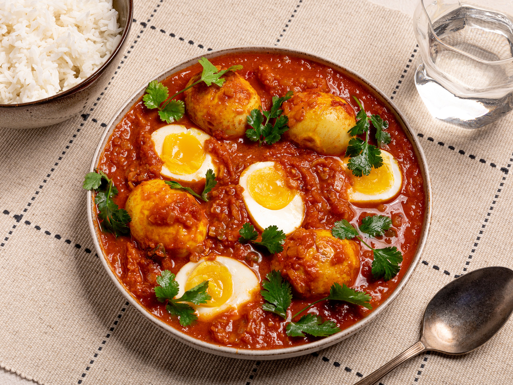

How to make Anda Curry?
Introduction
Egg curry is a popular and comforting Indian dish featuring hard-boiled eggs, onions, tomatoes, and a blend of whole and ground spices. The diversity of Indian cuisine is reflected in the various ways egg curry is prepared, with unique recipes across different states and families. Among the numerous methods shared on the blog, the Punjabi dhaba style stands out as a special favorite for the author's family. Dhabas, budget roadside restaurants prevalent throughout India, are known for their flavorful and delicious offerings, often frequented by travelers and locals alike. This particular style of egg curry closely replicates the authentic taste found in Punjabi dhabas, making it a delightful and cherished dish.
Ingredients
- Eggs
- Onion
- Tomatoes
- Oil
- Indian Spices
- Indian Herbs
Recipe
- Boil Those Eggs
- Elevate boiled eggs by tossing them in a mix of salt, turmeric, and chili powder. Roast in heated oil until small brown blisters appear. Set aside for a tantalizing foundation.
- Roast Those Eggs
- Elevate boiled eggs by tossing them in a mix of salt, turmeric, and chili powder. Roast in heated oil until small brown blisters appear. Set aside for a tantalizing foundation.
- Onion Magic
- Sauté finely chopped onions until soft and golden. Sprinkle a generous pinch of salt for enhanced caramelization.
- Spice It Up
- Lower heat and add ginger-garlic paste, followed by cumin powder, coriander powder, turmeric, red chili powder, and Kashmiri red chili powder. Sauté briefly, adding water to prevent burning
- Tomato Tango and Finishing Touches. Tomato Tango and Finishing Touches
- Introduce chopped tomatoes for a soft, mushy consistency. Add chopped green chili and crushed Kasuri methi. Witness the magic as the oil separates, signifying a harmonious blend.
- Final Steps - Bring on the Water, Garnish, and Serve
- Introduce water seasoned with salt and garam masala. This becomes the medium for the eggs to intertwine with the flavorful gravy. Garnish with fresh coriander leaves for visual appeal and herbaceous freshness. Serve with rice or paratha, and enjoy the savory satisfaction. Happy cooking!